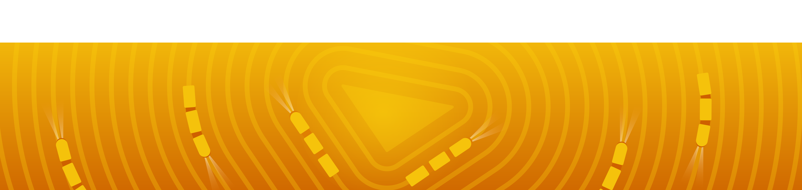
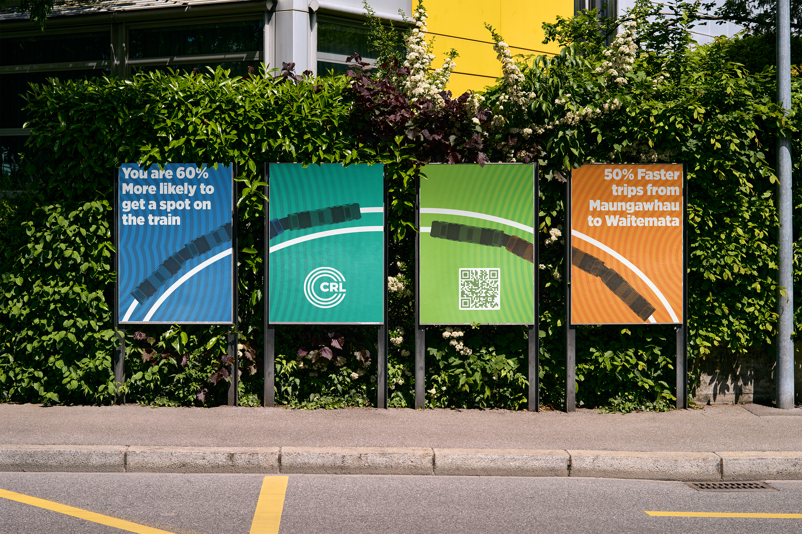
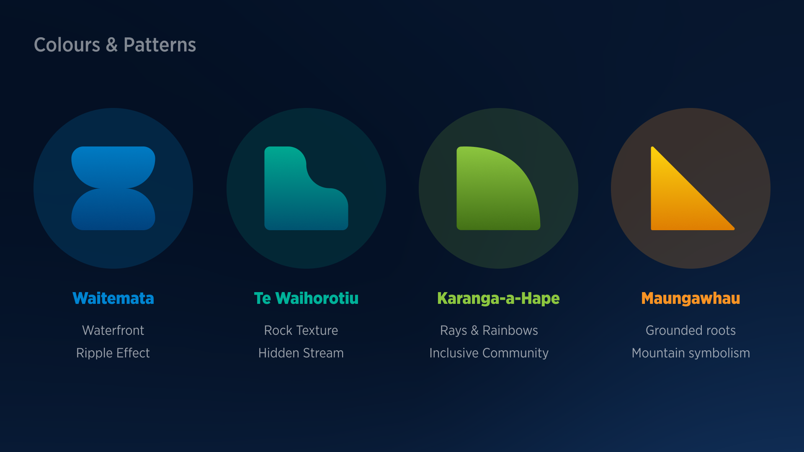
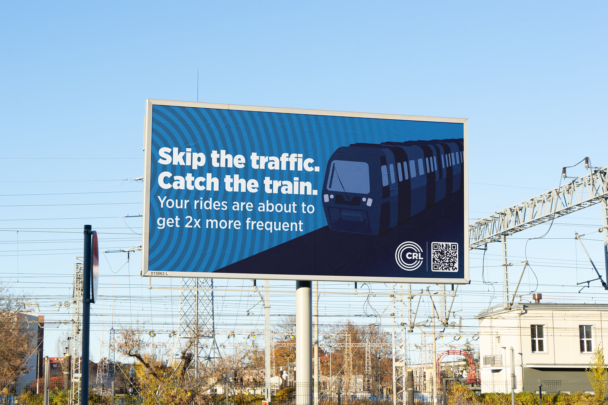
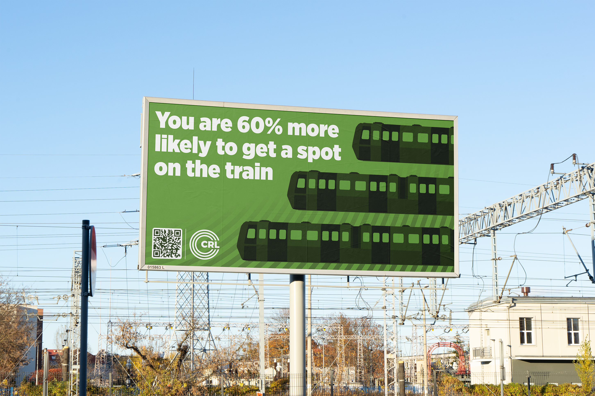
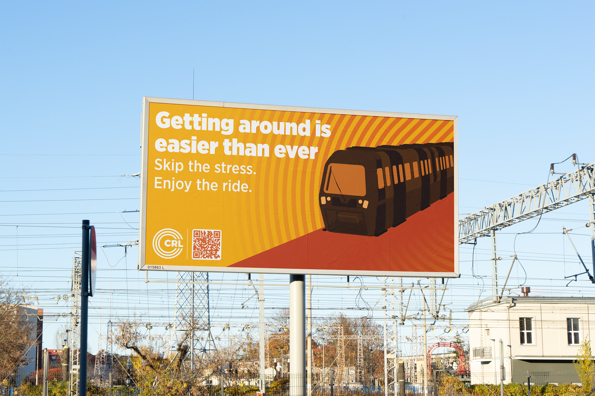

City Rail Link
A visual communication system designed to make City Rail Link information clear, accessible, and easy to navigate.
The City Rail Link project explores how a consistent visual system can communicate information clearly across a large-scale public transport environment.
The work focuses on creating an approachable identity and information system that helps people quickly understand changes, directions, and important service information.
The visual system uses bold colour, graphic shapes, typography, and pattern to create a recognisable and flexible language.
Different visual elements can be combined across applications while maintaining a consistent connection to the wider City Rail Link identity.
The system was applied across a range of physical and digital communication, including outdoor advertising, public transport environments, and campaign material.
The flexible approach allows information to remain visually consistent across different formats and locations.
The final outcome is a cohesive visual communication system that balances strong graphic design with practical information delivery.
Graphic Design · Visual Identity · Campaign Design · Digital Design








